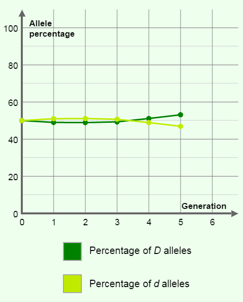

Allele
 One of a number of diffrent forms of a gene.
One of a number of diffrent forms of a gene.
Genotype
 The genetic makeup of an organism
The genetic makeup of an organism
Hardy-Weinberg Principle
Principle that alleles frequencies in a population will remain constant unless one or more factors cause the frequencies to change.
Heterozygous
 Term used to refer to an organism that has 2 different allels for the dame trait.
Term used to refer to an organism that has 2 different allels for the dame trait.
Homozygous
 Term used to refer to an organism that has 2 identical allels for the same trait.
Term used to refer to an organism that has 2 identical allels for the same trait.
Punnet Square
 A diagram showing the gene combinations that might result from a genetic cross
A diagram showing the gene combinations that might result from a genetic cross